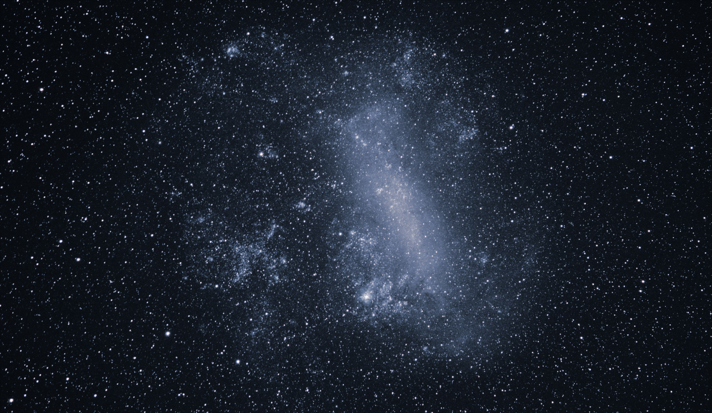

Guia das Galaxias
Guia de Galaxias

Grande Nuvem de magalhaes
Descrição
Grande Nuvem de Magalhães (comumente abreviada com LMC, do inglês Large
Magellanic Cloud) é uma galáxia anã satélite que orbita em torno da Via
Láctea.
Dados interessantes
- É rica em gases e poeira
- Foi batizada por Fernão de Magalhães
-
A grande Nuvem de magalhaes é uma das galaxias mais proximas da Via
lactea